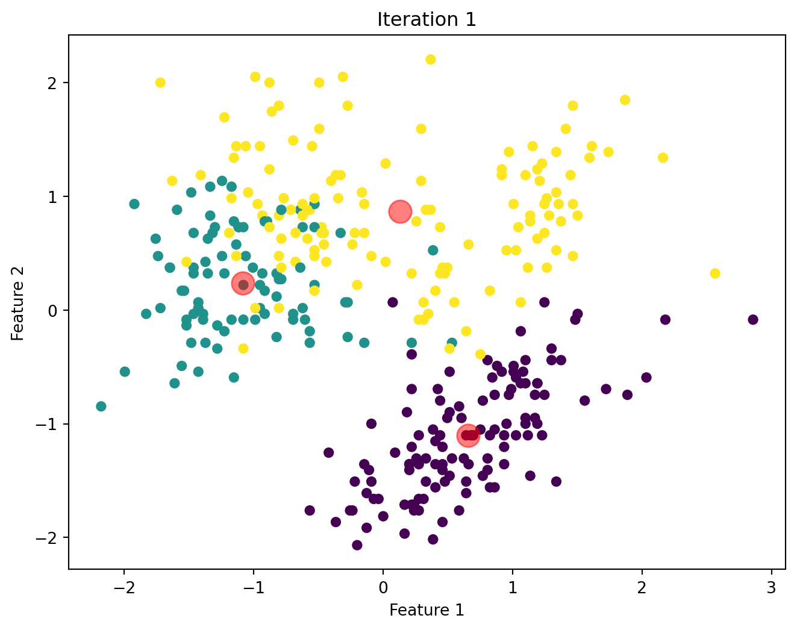
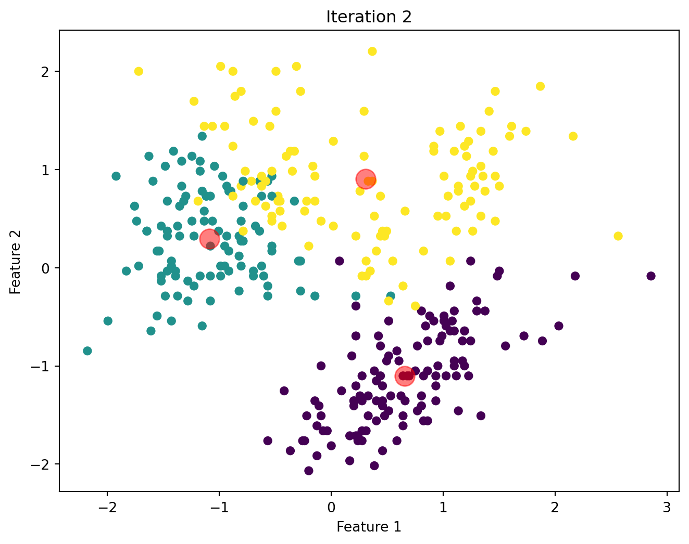
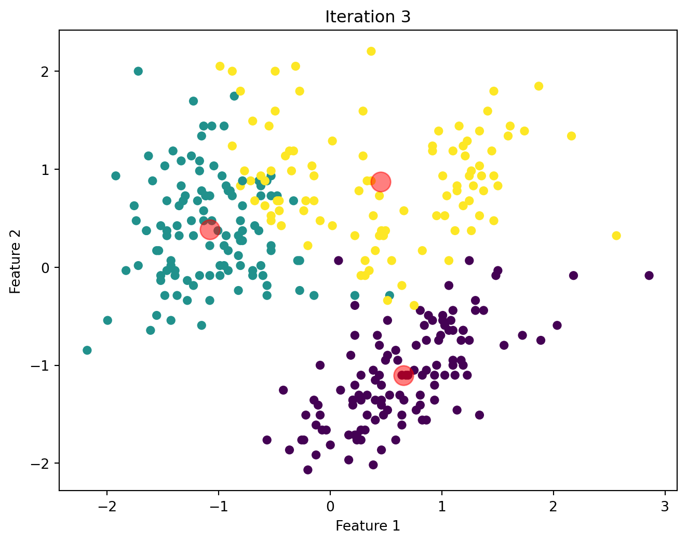
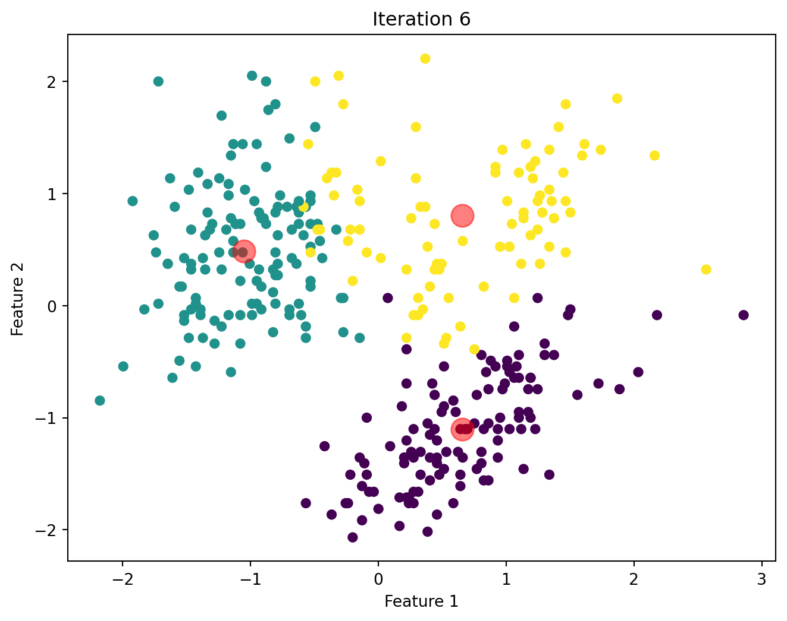
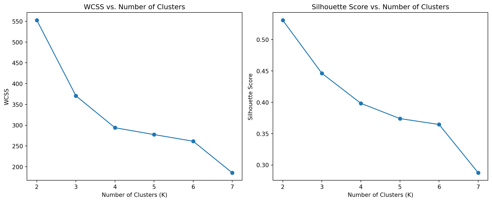

| rowid | species | island | bill_length_mm | bill_depth_mm | flipper_length_mm | body_mass_g | sex | year |
|---|---|---|---|---|---|---|---|---|
| Loading... (need help?) |
Segmentation Methods
Introduction
Clustering is a powerful machine learning technique used to identify natural groupings in data. In this analysis, we evaluate the performance of the KMeans clustering algorithm on the Palmer Penguins dataset.
Data
The Palmer Penguins dataset is widely used in clustering analysis.
Interactive Dataset
KMeans Algorithm
The KMeans algorithm partitions data into K distinct clusters based on feature similarity.
KMeans Algorithm Steps
Initialize Centroids
First, we initialize the centroids by randomly selecting K points from the dataset.
Formula: \[ \text{Centroids} = X[\text{indices}] \]
def initialize_centroids(X, k):
indices = np.random.choice(X.shape[0], k, replace=False)
return X[indices]Compute Distances
For each point in the dataset, we compute the Euclidean distance to each centroid.
Formula: \[ d(x_i, c_j) = \sqrt{\sum_{m=1}^n (x_{im} - c_{jm})^2} \]
def compute_distances(X, centroids):
distances = np.zeros((X.shape[0], len(centroids)))
for i, centroid in enumerate(centroids):
distances[:, i] = np.linalg.norm(X - centroid, axis=1)
return distancesAssign Clusters
Then, we assign each point to the nearest centroid.
Formula: \[ \text{Cluster Assignment} = \arg\min_{j} d(x_i, c_j) \]
def assign_clusters(distances):
return np.argmin(distances, axis=1)Update Centroids
After assigning clusters, we update the centroid of each cluster to be the mean of the points assigned to it.
Formula: \[ c_j = \frac{1}{|C_j|} \sum_{x_i \in C_j} x_i \]
def update_centroids(X, labels, k):
centroids = np.zeros((k, X.shape[1]))
for i in range(k):
points = X[labels == i]
centroids[i] = points.mean(axis=0)
return centroidsKMeans Function
Lastly, we iterate through the steps until the centroids do not change significantly.
def kmeans(X, k, max_iters=100, tol=1e-4):
centroids = initialize_centroids(X, k)
for i in range(max_iters):
distances = compute_distances(X, centroids)
labels = assign_clusters(distances)
new_centroids = update_centroids(X, labels, k)
if np.all(np.abs(new_centroids - centroids) < tol):
break
centroids = new_centroids
plot_kmeans(X, centroids, labels, i + 1)
return centroids, labelsImplementation and Visualizations
Below, we will visualize the KMeans algorithm as iterates until there is no significant change in the centroids position.




Comparison of Custom KMeans and Sklearn KMeans
The table below shows the cluster labelling assigned by both our custom KMeans and the off-the-shelf SKlearn KMeans.
Custom KMeans vs SKlearn KMeans
| Index | Custom KMeans | Sklearn KMeans |
|---|---|---|
| 0 | 0 | 1 |
| 1 | 0 | 1 |
| 2 | 0 | 1 |
| 3 | 0 | 1 |
| 4 | 0 | 1 |
| 5 | 0 | 1 |
| 6 | 0 | 1 |
| 7 | 0 | 1 |
| 8 | 0 | 1 |
| 9 | 0 | 1 |
| 10 | 0 | 1 |
| 11 | 0 | 1 |
| 12 | 2 | 1 |
| 13 | 0 | 1 |
| 14 | 2 | 1 |
| 15 | 0 | 1 |
| … | … | … |
| 339 | 2 | 1 |
| 340 | 2 | 1 |
| 341 | 2 | 1 |
| 342 | 2 | 1 |
| 343 | 2 | 1 |
Within-Cluster Sum of Squares and Silhouette Scores
To determine the optimal number of clusters, we examine WCSS and Silhouette Scores for different values of K. These metrics help us assess cluster cohesion and separation.

Discussion
From the WCSS plot, we can observe the “elbow” point, which suggests the optimal number of clusters. The Silhouette Score plot provides additional confirmation by indicating the number of clusters that result in the highest score.
Conclusion
This analysis demonstrates the application of KMeans clustering on the Palmer Penguins sample dataset. We evaluated the performance of the custom algorithm using WCSS and Silhouette Scores. We also identified the optimal number of clusters using these metrics, providing insights into the natural groupings within the dataset.